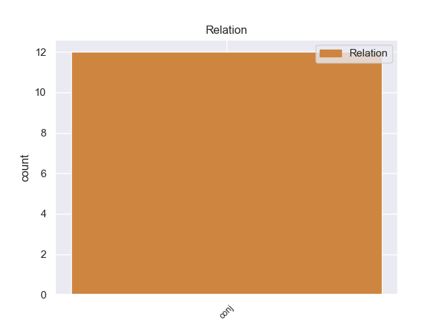
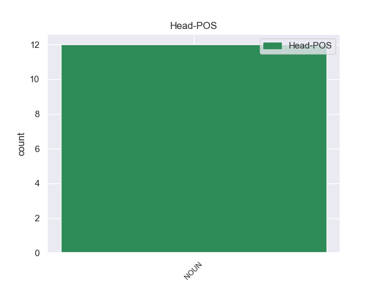
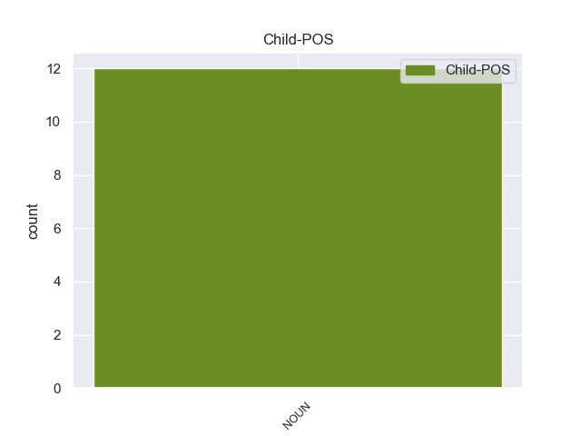

Distribution of features within this leaf



Agreement Rules sorted by frequency.
- When the dependent token is the conjunct(conj) of the head token, and the head token is NOUN and the dependent token is NOUN.
1 Όπως _ _ _ _ 0 _ _ _
2 αναφέρει _ _ _ _ 0 _ _ _
3 η _ _ _ _ 0 _ _ _
4 Εθνική _ _ _ _ 0 _ _ _
5 Μετεωρολογική _ _ _ _ 0 _ _ _
6 Υπηρεσία υπηρεσία NOUN _ Case=Gen|Gender=Fem|Number=Sing 0 _ _ _
7 , _ _ _ _ 0 _ _ _
8 οι _ _ _ _ 0 _ _ _
9 Πολιτείες _ _ _ _ 0 _ _ _
10 Μισισιπή μισισιπή NOUN _ Case=Gen|Gender=Fem|Number=Sing 6 conj _ _
11 , _ _ _ _ 0 _ _ _
12 Αλαμπάμα _ _ _ _ 0 _ _ _
13 και _ _ _ _ 0 _ _ _
14 Λουιζιάνα _ _ _ _ 0 _ _ _
15 που _ _ _ _ 0 _ _ _
16 βρίσκονται _ _ _ _ 0 _ _ _
17 σ _ _ _ _ 0 _ _ _
18 τον _ _ _ _ 0 _ _ _
19 Κόλπο _ _ _ _ 0 _ _ _
20 του _ _ _ _ 0 _ _ _
21 Μεξικού _ _ _ _ 0 _ _ _
22 , _ _ _ _ 0 _ _ _
23 παραμένουν _ _ _ _ 0 _ _ _
24 υπό _ _ _ _ 0 _ _ _
25 την _ _ _ _ 0 _ _ _
26 απειλή _ _ _ _ 0 _ _ _
27 ανεμοστρόβιλων _ _ _ _ 0 _ _ _
28 , _ _ _ _ 0 _ _ _
29 ισχυρών _ _ _ _ 0 _ _ _
30 ανέμων _ _ _ _ 0 _ _ _
31 και _ _ _ _ 0 _ _ _
32 έντονης _ _ _ _ 0 _ _ _
33 χαλαζόπτωσης _ _ _ _ 0 _ _ _
34 . _ _ _ _ 0 _ _ _
Disagree Examples:
1 Αποτελεί _ _ _ _ 0 _ _ _
2 πρόκληση _ _ _ _ 0 _ _ _
3 για _ _ _ _ 0 _ _ _
4 όλους _ _ _ _ 0 _ _ _
5 εμάς _ _ _ _ 0 _ _ _
6 - _ _ _ _ 0 _ _ _
7 το _ _ _ _ 0 _ _ _
8 Κοινοβούλιο κοινοβούλιο NOUN NOUN Case=Acc|Gender=Neut|Number=Sing 0 _ _ _
9 , _ _ _ _ 0 _ _ _
10 την _ _ _ _ 0 _ _ _
11 Επιτροπή επιτροπή NOUN NOUN Case=Acc|Gender=Fem|Number=Sing 8 conj _ _
12 και _ _ _ _ 0 _ _ _
13 το _ _ _ _ 0 _ _ _
14 Συμβούλιο _ _ _ _ 0 _ _ _
15 - _ _ _ _ 0 _ _ _
16 να _ _ _ _ 0 _ _ _
17 θεσπίσουμε _ _ _ _ 0 _ _ _
18 αυτά _ _ _ _ 0 _ _ _
19 τα _ _ _ _ 0 _ _ _
20 εχέγγυα _ _ _ _ 0 _ _ _
21 , _ _ _ _ 0 _ _ _
22 διότι _ _ _ _ 0 _ _ _
23 είναι _ _ _ _ 0 _ _ _
24 δύσκολο _ _ _ _ 0 _ _ _
25 να _ _ _ _ 0 _ _ _
26 εξακολουθήσουμε _ _ _ _ 0 _ _ _
27 να _ _ _ _ 0 _ _ _
28 συμφωνούμε _ _ _ _ 0 _ _ _
29 ώσπου _ _ _ _ 0 _ _ _
30 να _ _ _ _ 0 _ _ _
31 τα _ _ _ _ 0 _ _ _
32 αποκτήσουμε _ _ _ _ 0 _ _ _
33 . _ _ _ _ 0 _ _ _
1 Ωστόσο _ _ _ _ 0 _ _ _
2 , _ _ _ _ 0 _ _ _
3 η _ _ _ _ 0 _ _ _
4 Ομάδα _ _ _ _ 0 _ _ _
5 μου _ _ _ _ 0 _ _ _
6 πιστεύει _ _ _ _ 0 _ _ _
7 πως _ _ _ _ 0 _ _ _
8 , _ _ _ _ 0 _ _ _
9 παρόλο _ _ _ _ 0 _ _ _
10 που _ _ _ _ 0 _ _ _
11 οι _ _ _ _ 0 _ _ _
12 ευρωσκεπτικιστές _ _ _ _ 0 _ _ _
13 της _ _ _ _ 0 _ _ _
14 δεξιάς _ _ _ _ 0 _ _ _
15 ενίστανται _ _ _ _ 0 _ _ _
16 σε _ _ _ _ 0 _ _ _
17 οποιαδήποτε _ _ _ _ 0 _ _ _
18 συνεργασία _ _ _ _ 0 _ _ _
19 σε _ _ _ _ 0 _ _ _
20 αυτόν _ _ _ _ 0 _ _ _
21 τον _ _ _ _ 0 _ _ _
22 τομέα _ _ _ _ 0 _ _ _
23 , _ _ _ _ 0 _ _ _
24 όσοι _ _ _ _ 0 _ _ _
25 από _ _ _ _ 0 _ _ _
26 εμάς _ _ _ _ 0 _ _ _
27 δεν _ _ _ _ 0 _ _ _
28 ανήκουμε _ _ _ _ 0 _ _ _
29 σ _ _ _ _ 0 _ _ _
30 την _ _ _ _ 0 _ _ _
31 δεξιά _ _ _ _ 0 _ _ _
32 και _ _ _ _ 0 _ _ _
33 ενδιαφερόμαστε _ _ _ _ 0 _ _ _
34 για _ _ _ _ 0 _ _ _
35 τις _ _ _ _ 0 _ _ _
36 ατομικές _ _ _ _ 0 _ _ _
37 ελευθερίες _ _ _ _ 0 _ _ _
38 , _ _ _ _ 0 _ _ _
39 θα _ _ _ _ 0 _ _ _
40 πρέπει _ _ _ _ 0 _ _ _
41 μεν _ _ _ _ 0 _ _ _
42 να _ _ _ _ 0 _ _ _
43 συμφωνήσουμε _ _ _ _ 0 _ _ _
44 σε _ _ _ _ 0 _ _ _
45 αυτά _ _ _ _ 0 _ _ _
46 τα _ _ _ _ 0 _ _ _
47 μέτρα _ _ _ _ 0 _ _ _
48 , _ _ _ _ 0 _ _ _
49 αλλά _ _ _ _ 0 _ _ _
50 σ _ _ _ _ 0 _ _ _
51 τη _ _ _ _ 0 _ _ _
52 συνέχεια _ _ _ _ 0 _ _ _
53 θα _ _ _ _ 0 _ _ _
54 πρέπει _ _ _ _ 0 _ _ _
55 να _ _ _ _ 0 _ _ _
56 ασκήσουμε _ _ _ _ 0 _ _ _
57 πίεση _ _ _ _ 0 _ _ _
58 σ _ _ _ _ 0 _ _ _
59 την _ _ _ _ 0 _ _ _
60 Επιτροπή επιτροπή NOUN NOUN Case=Acc|Gender=Fem|Number=Sing 0 _ _ _
61 και _ _ _ _ 0 _ _ _
62 σ _ _ _ _ 0 _ _ _
63 το _ _ _ _ 0 _ _ _
64 Συμβούλιο συμβούλιο NOUN NOUN Case=Acc|Gender=Neut|Number=Sing 60 conj _ _
65 ώστε _ _ _ _ 0 _ _ _
66 να _ _ _ _ 0 _ _ _
67 επιτύχουμε _ _ _ _ 0 _ _ _
68 τη _ _ _ _ 0 _ _ _
69 θέσπιση _ _ _ _ 0 _ _ _
70 αυτών _ _ _ _ 0 _ _ _
71 των _ _ _ _ 0 _ _ _
72 εχεγγύων _ _ _ _ 0 _ _ _
73 των _ _ _ _ 0 _ _ _
74 πολιτών _ _ _ _ 0 _ _ _
75 . _ _ _ _ 0 _ _ _
1 Τέλος _ _ _ _ 0 _ _ _
2 , _ _ _ _ 0 _ _ _
3 σχετικά _ _ _ _ 0 _ _ _
4 με _ _ _ _ 0 _ _ _
5 τα _ _ _ _ 0 _ _ _
6 δύο _ _ _ _ 0 _ _ _
7 θέματα _ _ _ _ 0 _ _ _
8 που _ _ _ _ 0 _ _ _
9 δεν _ _ _ _ 0 _ _ _
10 αφορούν _ _ _ _ 0 _ _ _
11 τον _ _ _ _ 0 _ _ _
12 ανταγωνισμό _ _ _ _ 0 _ _ _
13 , _ _ _ _ 0 _ _ _
14 αλλά _ _ _ _ 0 _ _ _
15 έχουν _ _ _ _ 0 _ _ _
16 κάποια _ _ _ _ 0 _ _ _
17 σχέση _ _ _ _ 0 _ _ _
18 με _ _ _ _ 0 _ _ _
19 τις _ _ _ _ 0 _ _ _
20 τιμές τιμή NOUN NOUN Case=Acc|Gender=Fem|Number=Plur 0 _ _ _
21 , _ _ _ _ 0 _ _ _
22 τη _ _ _ _ 0 _ _ _
23 φορολογία _ _ _ _ 0 _ _ _
24 και _ _ _ _ 0 _ _ _
25 το _ _ _ _ 0 _ _ _
26 ευρώ ευρώ NOUN NOUN Case=Acc|Gender=Neut|Number=Sing 20 conj _ SpaceAfter=No
27 , _ _ _ _ 0 _ _ _
28 δεν _ _ _ _ 0 _ _ _
29 θα _ _ _ _ 0 _ _ _
30 επεκταθώ _ _ _ _ 0 _ _ _
31 πέραν _ _ _ _ 0 _ _ _
32 της _ _ _ _ 0 _ _ _
33 απάντησης _ _ _ _ 0 _ _ _
34 που _ _ _ _ 0 _ _ _
35 έδωσα _ _ _ _ 0 _ _ _
36 σχετικά _ _ _ _ 0 _ _ _
37 με _ _ _ _ 0 _ _ _
38 το _ _ _ _ 0 _ _ _
39 ζήτημα _ _ _ _ 0 _ _ _
40 του _ _ _ _ 0 _ _ _
41 ΗΒ _ _ _ _ 0 _ _ _
42 , _ _ _ _ 0 _ _ _
43 τα _ _ _ _ 0 _ _ _
44 αυτοκίνητα _ _ _ _ 0 _ _ _
45 και _ _ _ _ 0 _ _ _
46 το _ _ _ _ 0 _ _ _
47 ευρώ _ _ _ _ 0 _ _ _
48 . _ _ _ _ 0 _ _ _